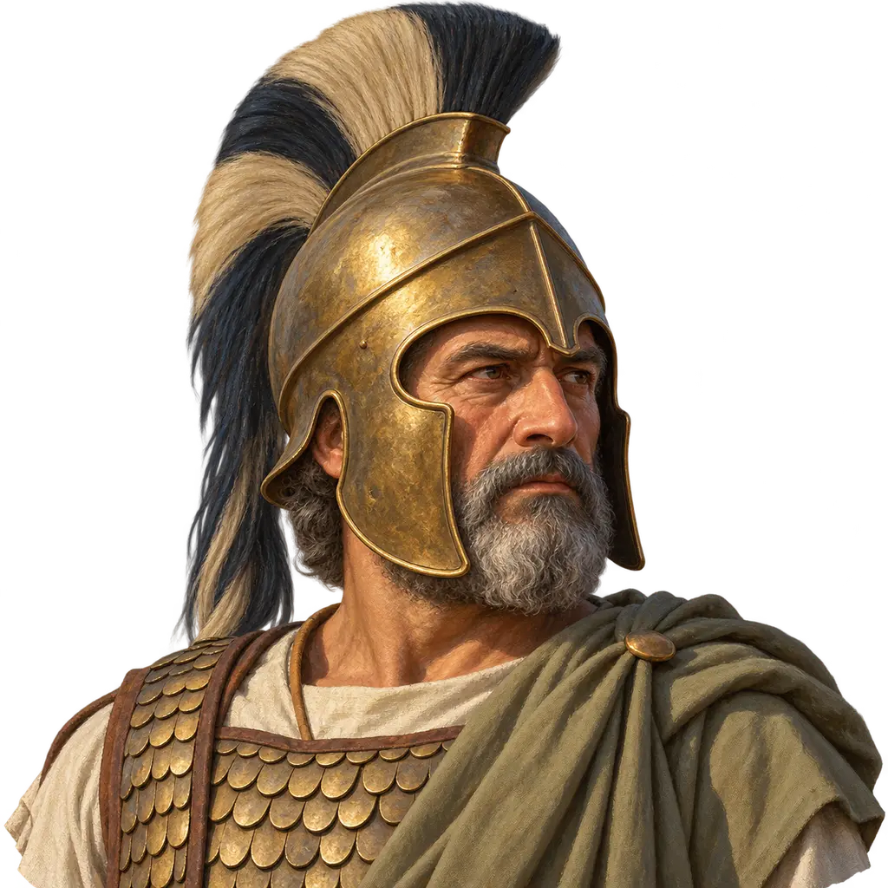
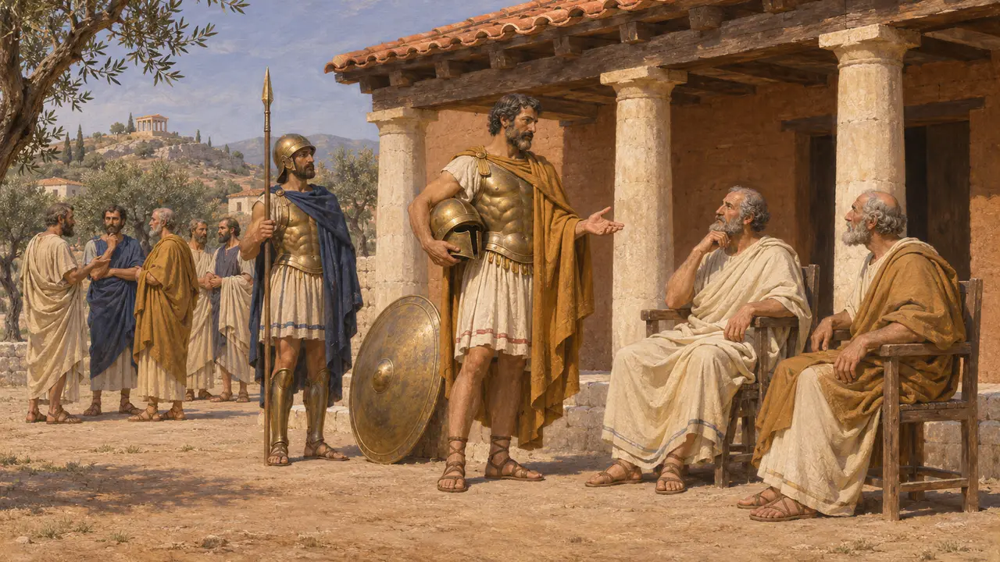
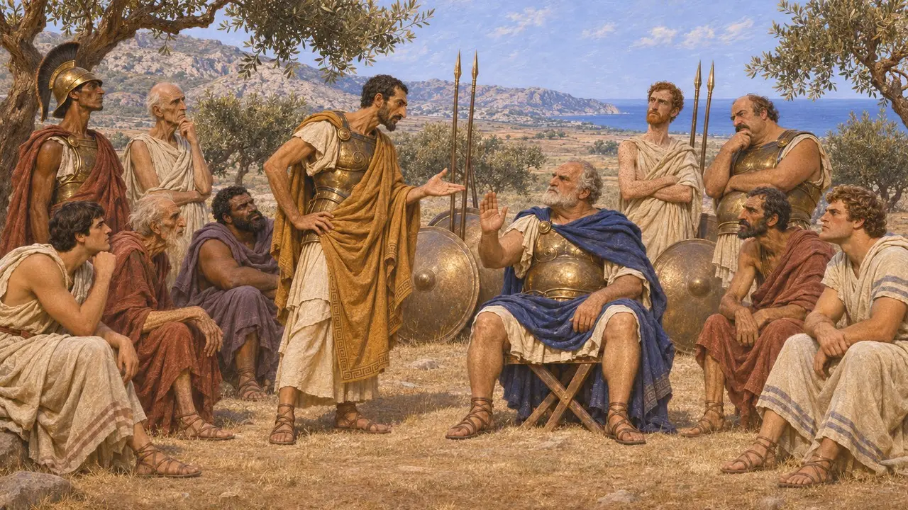
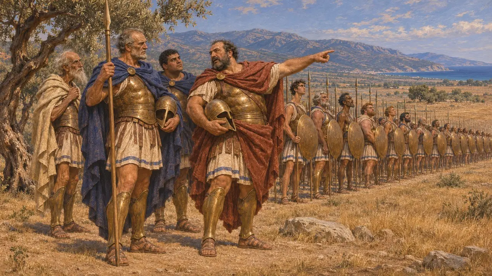
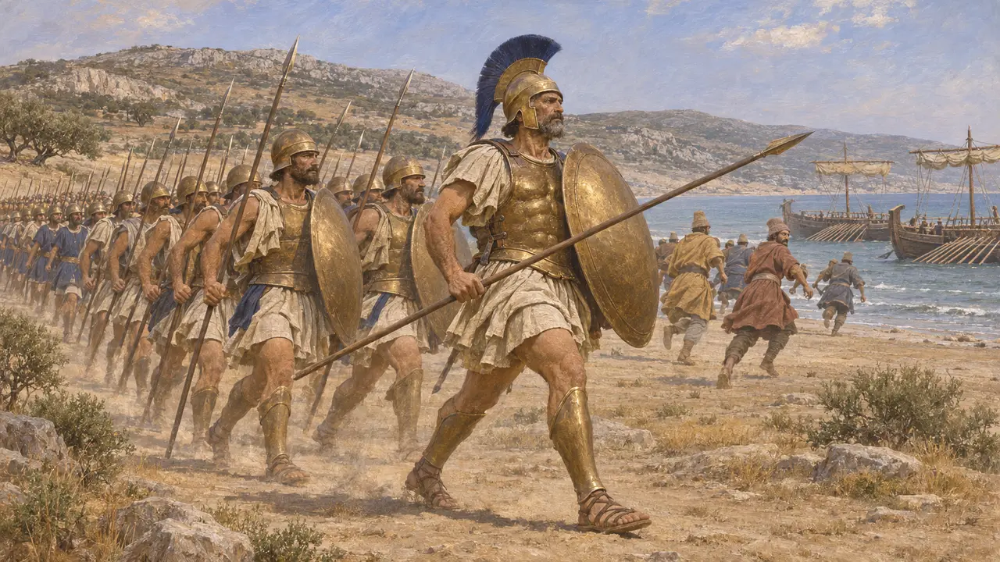
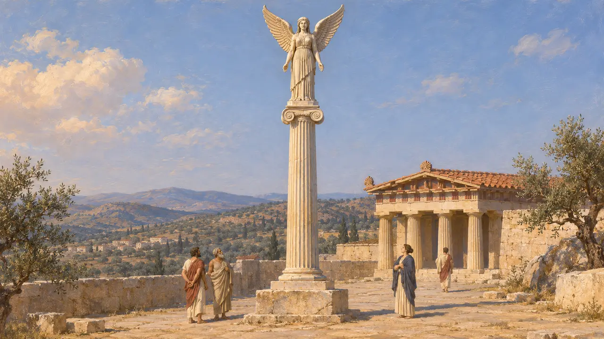
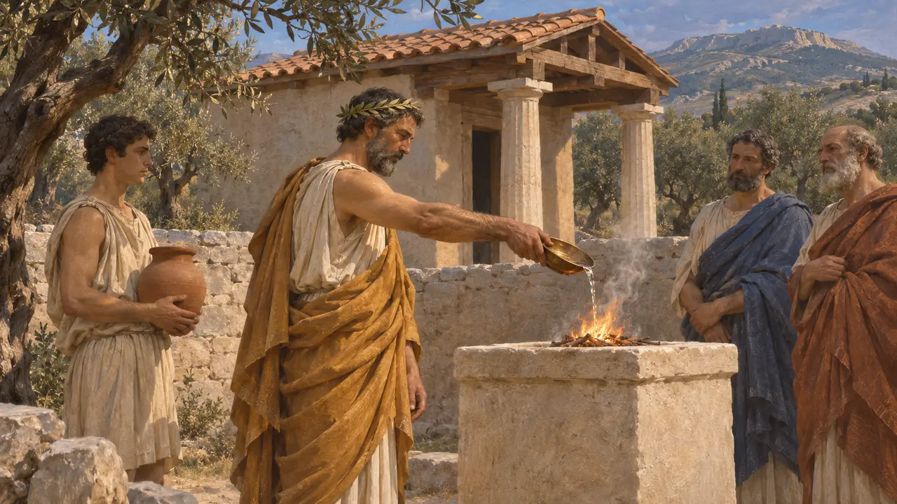

El polemarca
Arconte de la guerra de Atenas, uno de los nueve arcontes anuales, destacado en Maratón en 490 a. e. c.
El polemarca, o jefe de guerra, era uno de los nueve arcontes que gobernaban Atenas cada año. En la Atenas temprana mandaba el ejército de ciudadanos. Hacia el 490 a. e. c. su papel junto a los diez generales electos estaba cambiando, y Calímaco, polemarca el año de Maratón, fue el último titular del cargo del que consta que dirigiera a los atenienses en batalla.
En el juego: El juego presenta a Calímaco como el polemarca en Maratón, siguiendo a Heródoto. Históricamente, el polemarca era un cargo anual que compartía el mando con diez generales electos, y suele atribuirse a Milcíades el plan de batalla.

Un antiguo cargo del Estado ateniense
Relato antiguoLa Constitución de los atenienses, de la escuela aristotélica, afirma que la polemarquía fue la segunda de las grandes magistraturas en crearse, después del arconte rey, porque algunos titulares del antiguo cargo real eran débiles en la guerra. Más tarde se añadió el arconte que daba nombre al año y, con el tiempo, seis legisladores se unieron a ellos hasta formar nueve arcontes. Este relato se escribió en el siglo IV y se basa en parte en reconstrucciones.
Aristotle, Constitution of the Athenians 3.2-4

El polemarca y los diez generales
Relato antiguoLa misma obra dice que en 501/500 a. e. c. Atenas empezó a elegir diez generales, uno por cada tribu, pero el polemarca siguió siendo el jefe de todo el ejército. Heródoto cuenta que en Maratón los generales estaban divididos cinco contra cinco sobre si combatir, y que el polemarca tenía, por antigua costumbre, el undécimo voto decisivo. Milcíades convenció a Calímaco de votar por la batalla.
Herodotus 6.109-110; Aristotle, Constitution of the Athenians 22.2

Quién mandaba realmente en Maratón
En disputaHeródoto dice que Calímaco fue designado por sorteo, pero la Constitución de los atenienses fecha la designación de los arcontes por sorteo en el 487 a. e. c./6, así que probablemente fue elegido por votación. Heródoto también dice que los generales se turnaban el mando por días, y sin embargo atribuye el plan a Milcíades. Los historiadores aún debaten si Calímaco tuvo un mando real o un cargo en gran medida formal, con Milcíades dirigiendo el combate.
Herodotus 6.109-110; Aristotle, Constitution of the Athenians 22.5; P. Krentz, The Battle of Marathon, 2010

Calímaco en el ala derecha
Relato antiguoHeródoto afirma que el polemarca dirigía el ala derecha, el puesto de honor según la costumbre ateniense, con las tribus en orden y los plateenses a la izquierda. Calímaco murió en el combate junto a las naves persas. Pausanias, que escribía siglos después, lo vio representado en la pintura de Maratón de la Stoa Pintada de Atenas.
Herodotus 6.111, 6.114; Pausanias 1.15.3

La dedicatoria en la Acrópolis
En los documentosDe la Acrópolis se conservan fragmentos de una alta columna jónica coronada por una figura femenina alada. Llevan una inscripción en la que Calímaco de Afidna ofrenda el monumento a Atenea. El texto está roto y su restitución es discutida, pero probablemente lo llamaba polemarca y aludía a Maratón. De ser así, es un testimonio contemporáneo de que el polemarca fue vinculado públicamente con la victoria.
IG I³ 784

Después, un cargo jurídico y religioso
Relato antiguoLos historiadores suelen pensar que, una vez que los arcontes pasaron a elegirse por sorteo, el mando en la guerra recayó por completo en los generales. La Constitución de los atenienses describe al polemarca de época posterior ocupándose de los pleitos de extranjeros residentes y libertos, y ofreciendo sacrificios a Ártemis Cazadora y a Enialio. También organizaba los juegos fúnebres en honor de los atenienses caídos en la guerra.
Aristotle, Constitution of the Athenians 58
Fuentes
- Herodotus 6.109-114
- Aristotle, Constitution of the Athenians 3.2-4, 22.2-5, 58
- IG I³ 784
- Pausanias 1.15.3
- P. J. Rhodes, A Commentary on the Aristotelian Athenaion Politeia, 1981
- P. Krentz, The Battle of Marathon, 2010